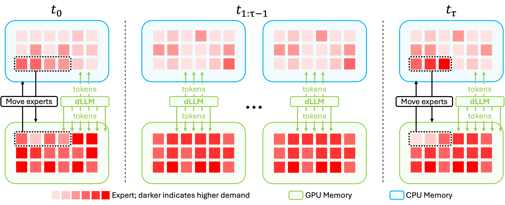
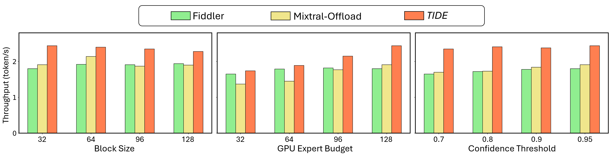
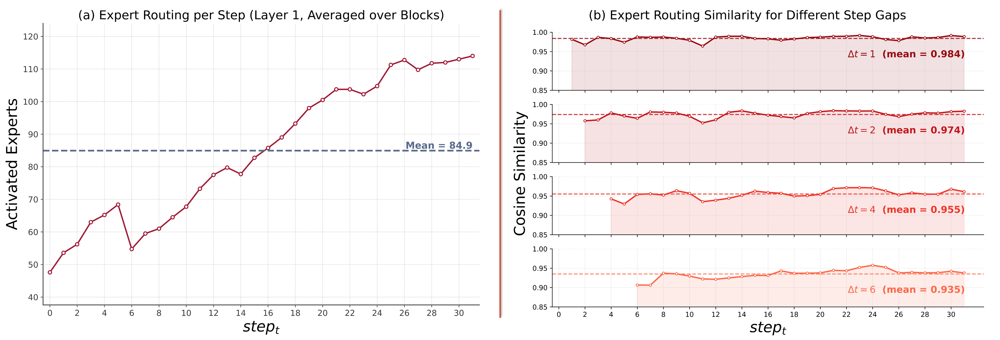

TIDE proposes a lossless, training-free inference system that exploits temporal stability of expert activations to achieve up to 1.5x throughput improvement for MoE diffusion LLMs on resource-constrained devices.
本文提出TIDE，一种面向混合专家扩散大语言模型（MoE-dLLM）的无损、免训练推理加速系统。通过利用相邻去噪步骤中专家激活的时间稳定性，TIDE采用基于间隔的专家刷新策略，将推理调度建模为数学规划问题，在资源受限的单GPU-CPU系统上实现高达1.5倍的吞吐量提升。
Deep Note — tide
Key Takeaways - TIDE leverages temporal stability of expert activations across adjacent denoising steps in MoE-dLLMs to reduce I/O overhead. - Interval-based expert refresh strategy updates expert placement only at selected steps, minimizing GPU-CPU data transfer. - Inference scheduling is formulated as a mathematical programming problem to find the optimal refresh interval. - TIDE is lossless and training-free, achieving up to 1.4x and 1.5x throughput improvements on LLaDA2.0-mini and LLaDA2.0-flash. - The method is designed for resource-constrained single GPU-CPU systems, enabling efficient MoE-dLLM deployment.
0) Metadata
- Title: TIDE: Efficient and Lossless MoE Diffusion LLM Inference with I/O-aware Expert Offload
- Alias: tide
- Authors: Zhiben Chen, Youpeng Zhao, Yang Sui, Jun Wang, Yuzhang Shang
- arXiv ID: 2605.20179
- Published:
- Links:
- Abs: https://arxiv.org/abs/2605.20179
- HTML: https://arxiv.org/html/2605.20179v1
- PDF: https://arxiv.org/pdf/2605.20179
- Tags: moe-dllm, inference-optimization, expert-offloading, resource-constrained, lossless-acceleration
- Domains: system_safety
- Rating: 4/5 (base 1 + quality 2 + observation 1)
1) Why-read
TIDE proposes a lossless, training-free inference system that exploits temporal stability of expert activations to achieve up to 1.5x throughput improvement for MoE diffusion LLMs on resource-constrained devices.
2) CRGP
C — Context
Diffusion Large Language Models (dLLMs) offer parallel block-level decoding and bidirectional context, making them attractive for edge deployment. However, scaling dLLMs with mixture-of-experts (MoE) architectures introduces memory and I/O challenges on resource-constrained hardware.
R — Related work
- Fast-dLLM: block-wise approximate KV caching and confidence-aware parallel decoding for dense dLLMs.
- dKV-Cache: exploits stable KV states in neighboring steps to reduce attention computation.
- Learn2PD: learning-based filter model to avoid redundant decoding in dLLMs.
- MoE inference systems for AR models: expert offloading (e.g., Mixtral offloading) and CPU routing (e.g., FlexGen).
G — Gap
Existing methods for MoE inference either incur prohibitive I/O overhead by swapping experts every step or become CPU-bound by routing tokens to CPU experts. No prior work addresses the unique execution pattern of MoE-dLLMs, where each denoising step activates a wide, fragmented expert footprint for all tokens in a block.
P — Proposal
TIDE introduces an interval-based expert refresh strategy that exploits the temporal stability of expert activations across adjacent denoising steps. It formulates inference scheduling as a mathematical programming problem to find the optimal refresh interval that minimizes I/O traffic and CPU computation, achieving lossless acceleration without model training.
---
4) Experiments
Main results
On a single GPU-CPU system, TIDE achieves up to 1.4x throughput improvement over baselines on LLaDA2.0-mini and 1.5x on LLaDA2.0-flash, evaluated on NVIDIA A100 and H100 GPUs.
Ablation
The optimal refresh interval is determined via a constrained mathematical programming model; using a fixed interval of 5 steps yields near-optimal performance, with cosine similarity of expert routing remaining above 0.95 for step pairs separated by 5 steps.
Limitations
['The method assumes temporal stability of expert activations, which may degrade for very long generation sequences or highly dynamic prompts.', 'The mathematical programming model requires hardware profiling, which may need recalibration for different GPU-CPU configurations.', 'Evaluation is limited to LLaDA2.0 models; generalizability to other MoE-dLLMs is not fully explored.']
5) Why it matters
- Enables deployment of large MoE-dLLMs on edge devices, aligning with the trend toward on-device AI for privacy and latency.
- Lossless and training-free acceleration is highly practical for production systems where model accuracy cannot be compromised.
- The interval-based refresh strategy is a novel application of temporal stability in diffusion processes, potentially applicable to other iterative inference tasks.
6) Next steps
- [ ] Test TIDE on other MoE-dLLM architectures (e.g., DeepSeek-MoE) to validate generalizability.
- [ ] Explore adaptive interval selection based on real-time expert activation similarity.
- [ ] Integrate TIDE with existing dLLM caching or compression techniques for further efficiency gains.
- [ ] Evaluate on multi-GPU or heterogeneous memory systems (e.g., CPU+NPU).
7) Scoring
4/5 = base 1 + quality 2 + observation 1
TIDE：面向MoE扩散大语言模型的高效无损推理系统
主要结论 - TIDE利用MoE-dLLM相邻去噪步骤中专家激活的时间稳定性，减少I/O开销。 - 基于间隔的专家刷新策略仅在选定步骤更新专家放置，最小化GPU-CPU数据传输。 - 推理调度被建模为数学规划问题，以找到最优刷新间隔。 - TIDE是无损且免训练的，在LLaDA2.0-mini和LLaDA2.0-flash上分别实现1.4倍和1.5倍的吞吐量提升。 - 该方法专为资源受限的单GPU-CPU系统设计，支持高效的MoE-dLLM部署。
1) 阅读理由
TIDE提出了一种无损、免训练的推理系统，利用专家激活的时间稳定性，在资源受限设备上为MoE扩散大语言模型实现高达1.5倍的吞吐量提升。
2) CRGP（背景 / 相关工作 / 差距 / 方案）
扩散大语言模型（dLLM）支持并行块级解码和双向上下文，适合边缘部署，但混合专家（MoE）架构在资源受限硬件上带来内存和I/O挑战。现有MoE推理方法要么每步交换专家导致高昂I/O开销，要么将令牌路由到CPU专家导致CPU瓶颈。TIDE提出基于间隔的专家刷新策略，利用相邻去噪步骤中专家激活的时间稳定性，并将推理调度建模为数学规划问题以找到最优刷新间隔，实现无损加速。
3) 实验
在单GPU-CPU系统上，TIDE在NVIDIA A100和H100 GPU上评估，相比基线在LLaDA2.0-mini上实现1.4倍吞吐量提升，在LLaDA2.0-flash上实现1.5倍吞吐量提升。
消融实验
最优刷新间隔通过约束数学规划模型确定；使用固定间隔5步可获得接近最优的性能，间隔5步的专家路由余弦相似度仍保持在0.95以上。
局限性
['该方法假设专家激活具有时间稳定性，对于极长生成序列或高度动态的提示可能退化。', '数学规划模型需要硬件性能分析，不同GPU-CPU配置可能需要重新校准。', '评估仅限于LLaDA2.0模型，对其他MoE-dLLM的泛化性尚未充分探索。']
4) 重要性
- 支持在边缘设备上部署大型MoE-dLLM，符合隐私和低延迟的端侧AI趋势。
- 无损且免训练的加速方式对生产系统非常实用，模型精度不受影响。
- 基于间隔的刷新策略是扩散过程中时间稳定性的新颖应用，可能适用于其他迭代推理任务。
5) 下一步
- [ ] 在其他MoE-dLLM架构（如DeepSeek-MoE）上测试TIDE以验证泛化性。
- [ ] 探索基于实时专家激活相似性的自适应间隔选择。
- [ ] 将TIDE与现有dLLM缓存或压缩技术集成，进一步提升效率。
- [ ] 在多GPU或异构内存系统（如CPU+NPU）上评估。
![Figure 1: (a)
Similarity heatmap of expert routing across denoising steps within a block.
Expert routing remains highly similar for nearby steps, and the diagonal bands show that this stability extends beyond immediate neighbors: step pairs separated by five denoising steps retain cosine similarity near 0.95 0.95 .
(b)
Overview of TIDE .
At refresh steps , the system intelligently swaps the GPU and CPU experts based on token hit counts (number of tokens each expert has processed).
At skipped steps , the system continues decoding with the current expert placement and does not migrate experts.
By exploiting routing stability across adjacent steps, TIDE avoids unnecessary GPU-CPU I/O overhead and maintains high GPU utilization.
(c)
Throughput comparison of TIDE against state-of-the-art MoE inference solutions [Kamahori et al. , 2024 , Eliseev and Mazur, 2023 ] for LLaDA2.0 in a single GPU-CPU setting.](figures/1151/fig_001.png)

![Figure 4: Impact of the refresh interval τ \tau .
(a) Relationship of GPU expert miss rate and the number of expert migrations with respect to τ \tau .
Increasing τ \tau generally raises the GPU expert miss rate .
Meanwhile, a larger τ \tau reduces the number of expert migrations.
The migration curve shows diminishing returns at larger τ \tau , consistent with our drift analysis in Eq. 6 .
(b) Relationship of expert migration and CPU computation latency with respect to τ \tau based on our analytical model.
We can see that an optimal τ \tau can be determined by solving the optimization problem in Eq. 7 .](figures/1151/fig_004.png)

